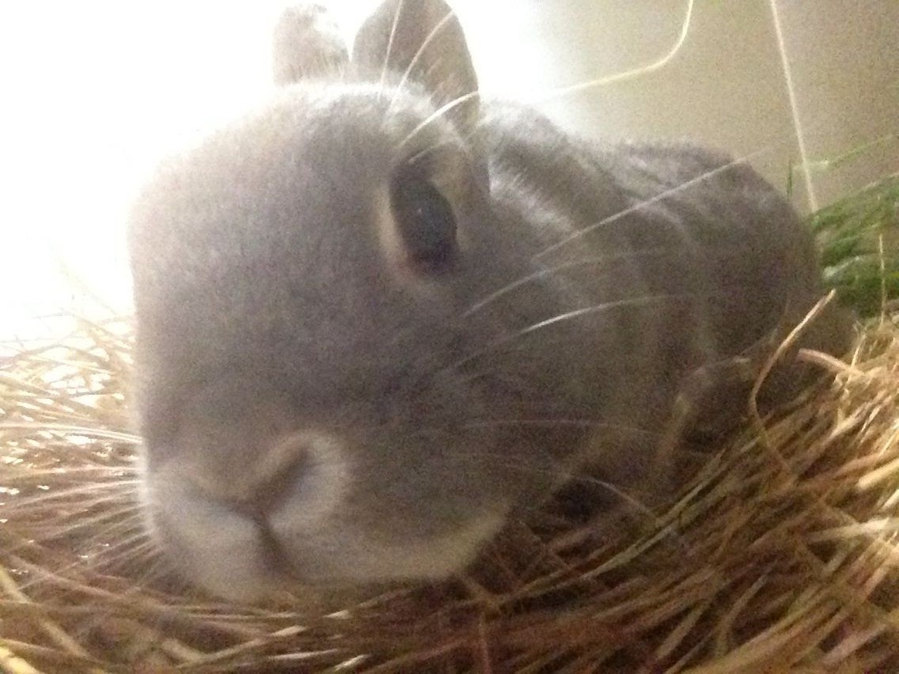
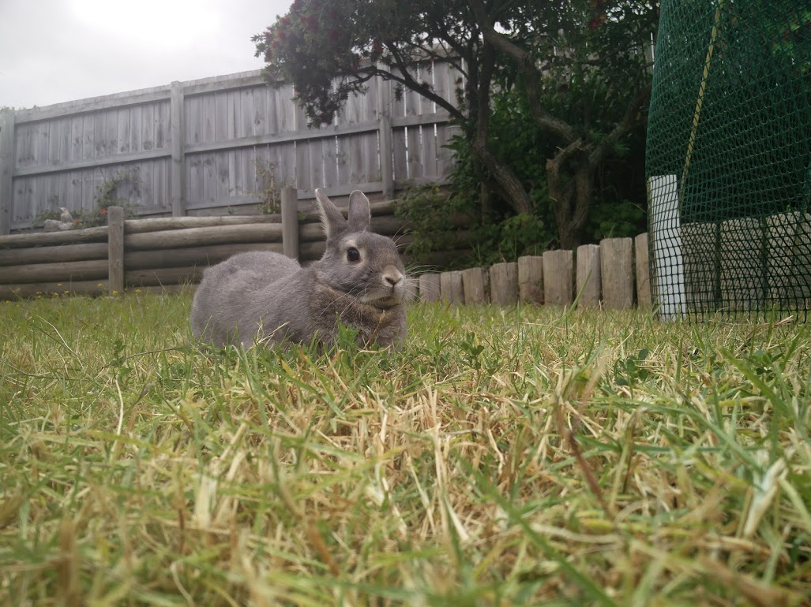

Rabbits are rewarding and popular pets. They can become part of the family but, as sensitive animals, are best suited to teenagers and adults. Children should only look after rabbits under parental supervision.
Naturally sociable, rabbits like companionship and prefer to live in pairs or compatible groups and their behaviour will reflect this. There are many breeds to choose from, although a rabbit of mixed breeding can offer just as much fun and companionship. Rabbits with long fur take much more looking after as the fur can become matted quickly and therefore requires daily grooming.

Rabbits As Pets 1. Personality
Rabbits can make great pets and tend to bond very closely with their owners. They can be extremely social, and love being around people, making them loyal companions.
They also have a tendency to be very independent, which makes caring for them less stressful compared to other pets. Being very social and playful mammals, rabbits are easily distracted by toys. Training a rabbit can be quite easy, using similar techniques as one would to train a dog.

2. Essential Equipment
In order to successfully own a rabbit, there are essential items that are needed. First it is important to have a cage that the rabbit can call home. It does not need to be big, just somewhere that the rabbit can live comfortably and relax.Secondly it is important to have a water bottle or water bowl that is replenished with fresh water daily. A litter box for the corner of the cage is a great purchase because it can help potty-train the rabbit, and can easily be cleaned on either a daily basis or every other day. It is also essential to have toys for a rabbit. Since they are very social and playful animals, it is important for them to have toys to play with while their owners are not able to be with them.
After purchasing essential housing items for a rabbit, a new owner needs to purchase bedding for the cage. Having newspaper handy makes cleaning the cage extremely easy and (hopefully) a little less messy.
3. Grooming
Grooming a rabbit is essential for their health and wellbeing. Purchasing a brush at a local pet shop comes in handy when grooming. It is important to groom a rabbit on a weekly basis because they tend to groom themselves obsessively, but it becomes dangerous to their health due to the fact that they swallow so much of their fur.